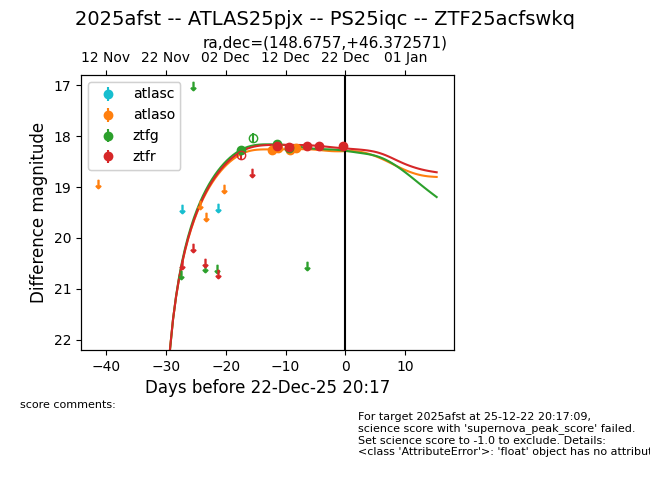
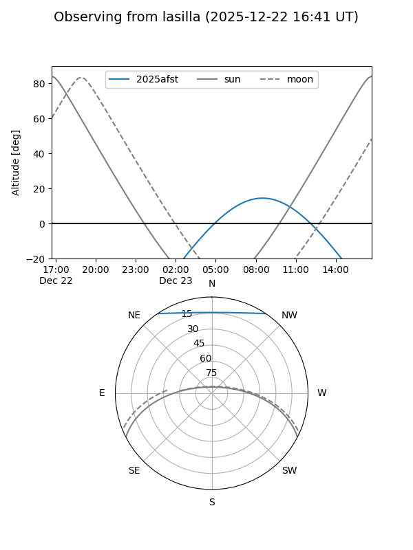
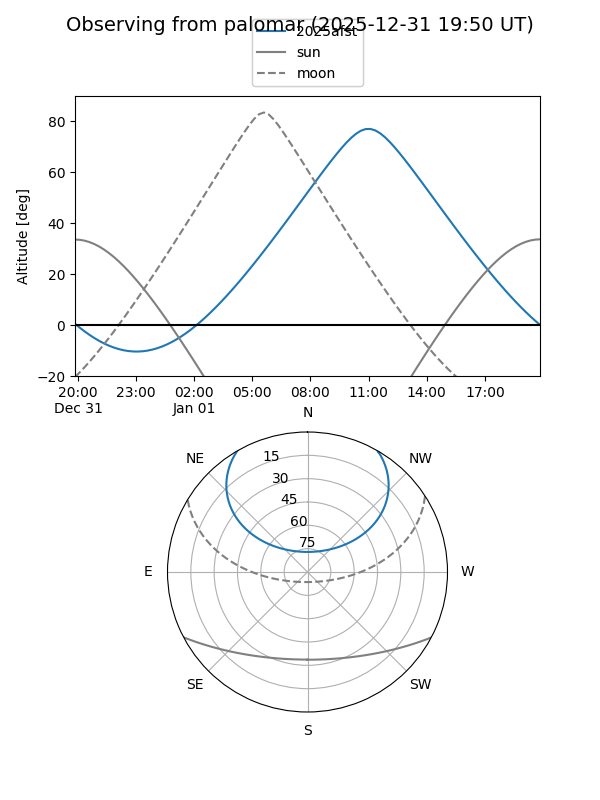
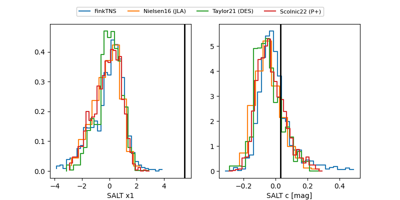

2025afst
Target 2025afst at 2025-12-29 11:23
Aliases and brokers:
FINK: fink-portal.org/ZTF25acfswkq
Lasair: lasair-ztf.lsst.ac.uk/objects/ZTF25acfswkq
ALeRCE: alerce.online/object/ZTF25acfswkq
TNS: wis-tns.org/object/2025afst
YSE: ziggy.ucolick.org/yse/transient_detail/2025afst
alt names
ZTF25acfswkq (ztf,fink_ztf)
2025afst (tns,yse)
ATLAS25pjx (atlas)
PS25iqc (panstarrs)
Coordinates:
equatorial (ra, dec) = 148.6757,+46.37257
equatorial (HMS+DMS) = 09:54:42.18,+46:22:21.25
galactic (l, b) = (171.8929,+50.39062)
Flags:
Photometry:
last atlaso=18.23, ztfg=18.24, ztfr=18.23
4 atlaso, 3 ztfg, 6 ztfr detections
Lightcurve

Visibility


Additional plots
